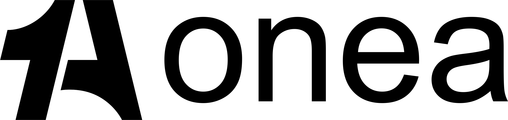
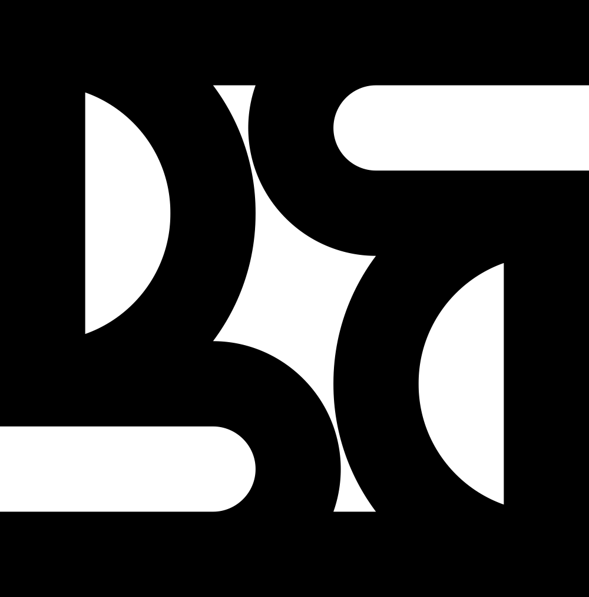

Siapa Saya: Tentang Yuda Design
Halo! Saya Yuda, seorang Desainer UI/UX dan Logo yang bersemangat dalam menciptakan solusi digital yang intuitif, estetis, dan berdampak. Perjalanan saya dimulai dari ketertarikan mendalam akan bagaimana manusia berinteraksi dengan teknologi.
Saya percaya bahwa desain yang efektif lebih dari sekadar tampilan; ini tentang memecahkan masalah, meningkatkan usability, dan membangun koneksi emosional antara produk dan penggunanya. Fokus saya adalah menciptakan desain yang indah dan fungsional.
Perjalanan saya di dunia desain dimulai dari ketertarikan mendalam akan bagaimana manusia berinteraksi dengan teknologi, yang kemudian mengarahkan saya untuk fokus pada perancangan pengalaman yang berpusat pada pengguna. Dari situlah passion saya pada UX berkembang.
Saya senantiasa haus akan pembelajaran dan selalu siap menghadapi tantangan baru untuk mengembangkan keahlian saya dalam setiap proyek. Saya selalu mencari cara untuk berinovasi.
Keahlian Utama: My Core Skills
- UI DesignUser Interface
- UX ResearchUser Experience
- Wireframing & PrototypingInteractive Mockups
- User TestingUsability Validation
- Logo DesignBrand Mark
- Brand IdentityVisual System
- Web & Mobile App DesignResponsive Design
- Information ArchitectureContent Structure

Layanan Desain Komprehensif What I Offer
Saya menyediakan solusi desain lengkap yang berfokus pada menciptakan pengalaman pengguna terbaik. Dari konsep hingga realisasi, saya membangun produk yang berdampak. Transformasi ide menjadi produk digital yang sukses.
-
Desain UI/UX Penuh Full UI/UX Design
Perancangan antarmuka pengguna (UI) yang menarik dan pengalaman pengguna (UX) yang mulus untuk aplikasi web, seluler, dan platform digital lainnya. Menciptakan antarmuka yang intuitif dan indah.
-
Riset Pengguna & Analisis User Research & Analysis
Mengidentifikasi kebutuhan, perilaku, dan motivasi pengguna melalui wawancara, survei, analisis kompetitor, dan pembuatan persona. Desain yang didukung data nyata.
-
Wireframing & Prototyping Interactive Mockups
Mengembangkan kerangka dasar (wireframe) dan prototipe interaktif untuk memvisualisasikan alur pengguna dan menguji fungsionalitas awal. Mewujudkan ide menjadi prototipe fungsional.
-
Pengujian Kegunaan (Usability Testing) Real User Validation
Melakukan pengujian dengan pengguna nyata untuk mengidentifikasi masalah kegunaan, mengumpulkan umpan balik, dan memastikan desain intuitif. Memastikan produk mudah digunakan oleh siapa saja.
-
Desain Logo & Identitas Merek Branding Solutions
Menciptakan logo yang unik, berkesan, dan relevan, serta mengembangkan panduan identitas merek yang kohesif. Membangun pondasi visual merek Anda.
-
Audit UX & Konsultasi Expert UX Review
Mengevaluasi produk digital yang ada untuk mengidentifikasi area perbaikan, meningkatkan kinerja, dan memberikan rekomendasi strategis. Meningkatkan kualitas pengalaman pengguna yang ada.
Proses Desain yang Terbukti My Proven Design Workflow
Setiap proyek adalah perjalanan unik, namun saya mengikuti metodologi desain yang terstruktur dan adaptif untuk memastikan hasil terbaik. Pendekatan saya berpusat pada kolaborasi, riset mendalam, dan iterasi berkelanjutan. Dari ide menjadi solusi nyata dengan langkah yang jelas.
-
01
Memahami (Understand)The Discovery Phase
Pertemuan awal dengan klien untuk memahami tujuan, tantangan, dan visi proyek. Analisis target audiens dan lanskap kompetitor.Mendefinisikan kebutuhan inti proyek.
-
02
Menjelajahi (Explore)Research & Ideation
Melakukan riset pengguna mendalam, mengembangkan persona pengguna dan peta perjalanan pengguna. Brainstorming ide dan konsep awal.Mencari solusi inovatif dan berbasis data.
-
03
Membentuk (Formulate)Wireframing & Prototyping
Pembuatan wireframe (sketsa digital) untuk menyusun struktur dan alur. Pengembangan prototipe interaktif untuk memvisualisasikan fungsionalitas.Membangun kerangka dasar interaksi produk.
-
04
Memurnikan (Refine)Visual Design & Testing
Desain antarmuka pengguna (UI) yang mendetail, termasuk gaya visual, tipografi, dan palet warna. Pengujian kegunaan dengan pengguna nyata untuk mengumpulkan umpan balik dan iterasi.Menyempurnakan estetika dan fungsionalitas.
-
05
Membangun (Build)Implementation & Launch
Mempersiapkan aset desain dan panduan gaya untuk handover ke pengembang. Kolaborasi erat dengan tim pengembangan untuk memastikan implementasi yang akurat.Memastikan transisi mulus dari desain ke produk.

[Nama Aplikasi/Platform] E-commerce App Redesign
Merancang Pengalaman Belanja Online yang Intuitif.Seamless Shopping Experience.
**Tantangan:** Klien menghadapi tingkat konversi yang rendah dan feedback negatif terkait alur checkout yang rumit pada aplikasi e-commerce mereka. Pengguna kesulitan menemukan produk dan menyelesaikan pembelian. Problem: Low conversion & complex checkout.
**Solusi & Peran Saya:** Saya memimpin riset pengguna mendalam, termasuk wawancara dan analisis data perilaku. Berdasarkan temuan, saya merancang ulang alur pencarian, halaman produk, dan proses checkout. Saya bertanggung jawab atas wireframing, prototyping, desain visual UI, dan pengujian kegunaan. My Role: Full UX/UI redesign from research to testing.
Fokus utama saya adalah menyederhanakan navigasi, meningkatkan kejelasan informasi produk, dan mempercepat proses pembayaran. Key Focus: Simplicity, clarity, speed.
**Dampak/Hasil:** Setelah peluncuran desain baru, aplikasi mengalami peningkatan tingkat konversi sebesar 25% dan penurunan angka bounce rate pada halaman checkout sebesar 15%. Umpan balik pengguna juga menjadi sangat positif. Impact: +25% conversion, -15% bounce rate, positive user feedback.

[Nama Platform] Analytics Dashboard UX
Membangun Dashboard Analitik yang Mudah Digunakan.User-Friendly Data Visualization.
**Tantangan:** Perusahaan membutuhkan dashboard analitik yang intuitif untuk memvisualisasikan data penjualan kompleks bagi tim internal mereka. Dashboard yang ada terlalu padat dan sulit diinterpretasikan. Problem: Complex data, difficult to interpret dashboard.
**Solusi & Peran Saya:** Saya bertugas sebagai desainer UX utama, bekerja sama dengan analis data untuk memahami hierarki informasi. Saya merancang arsitektur informasi yang baru, mengelompokkan data secara logis, dan membuat visualisasi yang jelas dan mudah dipahami. My Role: UX Lead, re-architected information, clear visualizations.
Fokus saya adalah pada desain interaksi yang memungkinkan pengguna memfilter dan mengeksplorasi data dengan mudah, serta mendesain komponen UI yang konsisten dan fungsional. Key Focus: Easy data filtering & exploration.
**Dampak/Hasil:** Penggunaan dashboard meningkat signifikan, dengan pengguna melaporkan efisiensi 30% dalam mengakses informasi krusial. Keputusan bisnis kini lebih cepat dan berbasis data. Impact: +30% efficiency in data access, faster data-driven decisions.
[Nama Perusahaan/Merek] Brand Identity Design
Menciptakan Identitas Visual yang Berkarakter.Distinctive Visual Identity.
**Tantangan:** Startup baru di bidang teknologi [Sektor spesifik] membutuhkan identitas merek yang modern, dapat dipercaya, dan mudah diingat untuk membedakan diri dari kompetitor. Problem: Need modern, trustworthy, memorable brand identity for tech startup.
**Solusi & Peran Saya:** Saya mengembangkan konsep logo yang merefleksikan nilai-nilai inti perusahaan: inovasi, kepercayaan, dan pertumbuhan. Proses dimulai dari riset visual, pengembangan moodboard, sketsa konsep awal, hingga finalisasi desain logo. My Role: Developed logo concept, moodboard, sketches, final design.
Saya juga merancang palet warna, tipografi, dan elemen visual pendukung untuk memastikan konsistensi merek di semua media. Extended to color palette, typography, supporting visuals.
**Dampak/Hasil:** Merek berhasil diluncurkan dengan identitas visual yang kuat, membantu klien menarik investor dan membangun citra profesional di mata target pasar mereka. Impact: Strong visual identity, attracted investors, built professional image.
[Nama Cafe/Restoran] Cafe Brand Identity
Merancang Brand Persona yang Hangat & Mengundang.Warm & Inviting Brand Persona.
**Tantangan:** Sebuah kedai kopi baru ingin menciptakan identitas visual yang unik yang mencerminkan suasana *cozy* dan kualitas biji kopi premium mereka. Mereka ingin logo yang bisa diaplikasikan di berbagai media. Problem: Need unique visual identity for cozy, premium coffee shop.
**Solusi & Peran Saya:** Saya merancang logo yang menggabungkan elemen tradisional dan modern, dengan fokus pada tipografi kustom dan ikonografi yang hangat. Proses melibatkan eksplorasi bentuk, warna, dan gaya yang berbeda. My Role: Designed logo blending traditional/modern, custom typography, warm iconography.
Saya juga membuat pola dan ilustrasi pendukung yang dapat digunakan di kemasan dan dekorasi interior. Created supporting patterns and illustrations for packaging & interior.
**Dampak/Hasil:** Identitas merek yang kuat membantu kafe menarik pelanggan dan menciptakan atmosfer yang khas, mendorong peningkatan penjualan dan loyalitas pelanggan. Impact: Strong brand attracted customers, created unique atmosphere, boosted sales & loyalty.
Karya Lainnya: Sekilas Inovasi & Estetika. More Projects: Innovation & Aesthetics.
Berikut adalah beberapa proyek lain yang menunjukkan beragam keahlian saya dalam desain UI/UX dan logo. Setiap karya adalah bukti komitmen saya terhadap kualitas dan detail. A collection showcasing my diverse UI/UX and logo design skills.

Podcast Branding IdentityAudio Show Visuals Tech Conference LogoEvent Branding
Tech Conference LogoEvent Branding
Mari Terhubung & Wujudkan Visi Anda! Let's Connect & Create!
Siap untuk berkolaborasi dalam proyek desain yang menarik? Apakah Anda memiliki ide brilian untuk aplikasi baru, membutuhkan identitas merek yang kuat, atau hanya ingin berdiskusi tentang potensi desain, saya sangat senang untuk terhubung. I'm ready to discuss your next design project.
Informasi Kontak: Get in Touch:
Email: yudadarnoto231@gmail.com Send me an email!
LinkedIn: linkedin.com/in/yudaxdesign Connect on LinkedIn!
Behance: behance.net/yudaxdesign See more work on Behance!
Saya menantikan kesempatan untuk berkolaborasi dengan Anda. Mari kita ciptakan sesuatu yang luar biasa bersama! Looking forward to building something amazing!